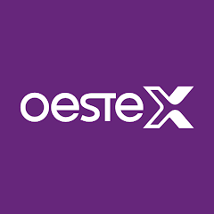
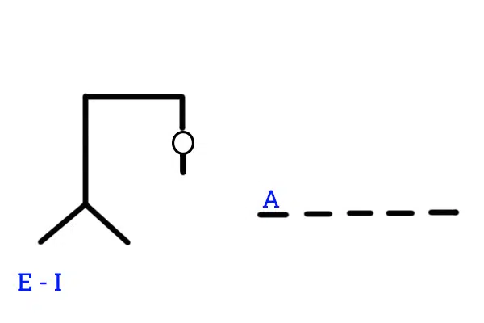

Diseño de Página Web para ingreso de trabajadores
Este proyecto consiste en el diseño de una página web para facilitar el ingreso de nuevos trabajadores a una empresa.
Bienvenido a mi portfolio personal. Aquí encontrarás información sobre mí, mis proyectos y cómo contactarme.
Estudiante de licenciatura en sistemas de información en la Facultad de Ciencias Exactas, fisicas y Naturales de San Juan.
Manejo lenguajes tales como python, c++ y front end. También utilizo github de forma concurrente para el control de todos mis proyectos.
Además de la facultad, estuve en varios cursos de programacion en Udemy. Me ayudaron a mejorar mis conocimientos en un entorno menos formal
Me gusta aprender de forma autodidacta, y siempre estoy buscando nuevos desafíos para mejorar mis habilidades.
Gran fan de la lógica matematica y el ajedrez

Este proyecto consiste en el diseño de una página web para facilitar el ingreso de nuevos trabajadores a una empresa.
Realicé varias tareas dentro de la empresa, incluyendo la actualización de sistemas y la resolución de problemas técnicos.
Creé mi propio juego de "ahorcado" utilizando java.
También puedes encontrarme en mis redes sociales:
“Es un excelente compañero de trabajo.”
“Gran amigo.”